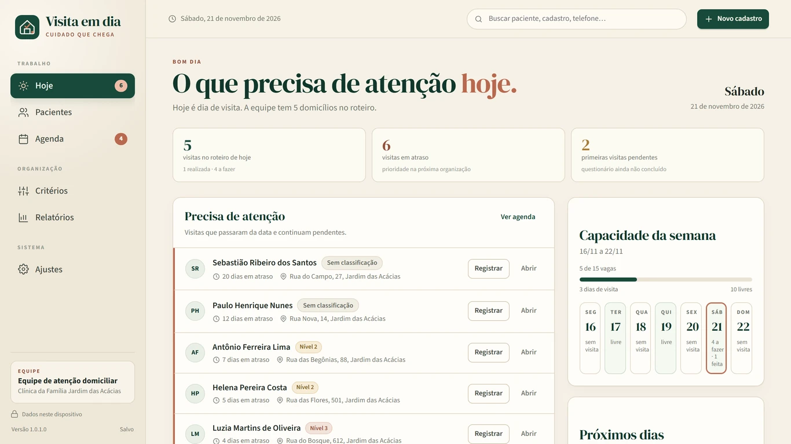
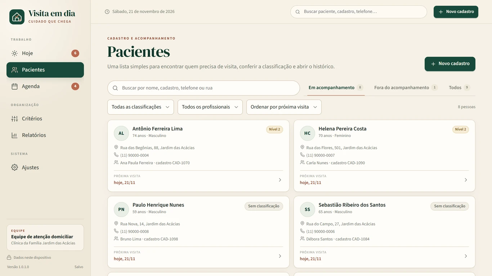
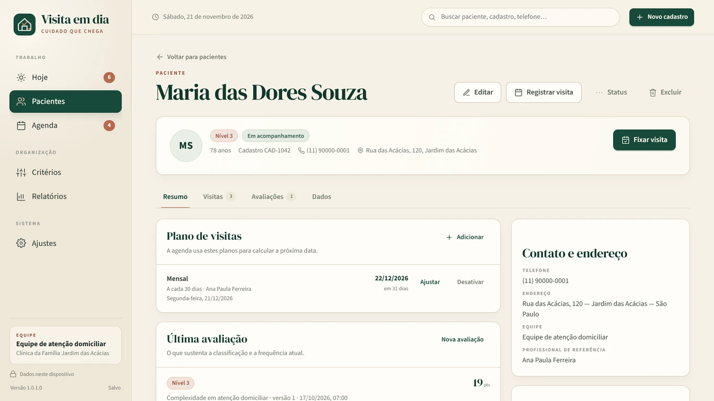
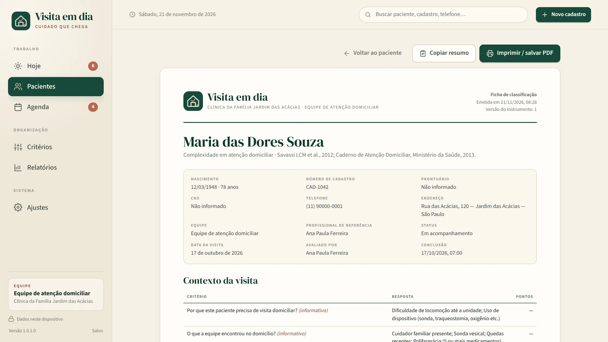
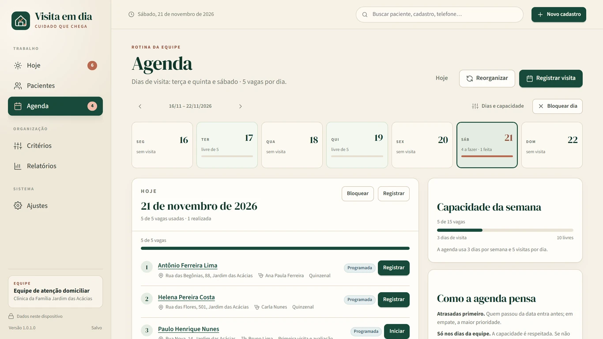
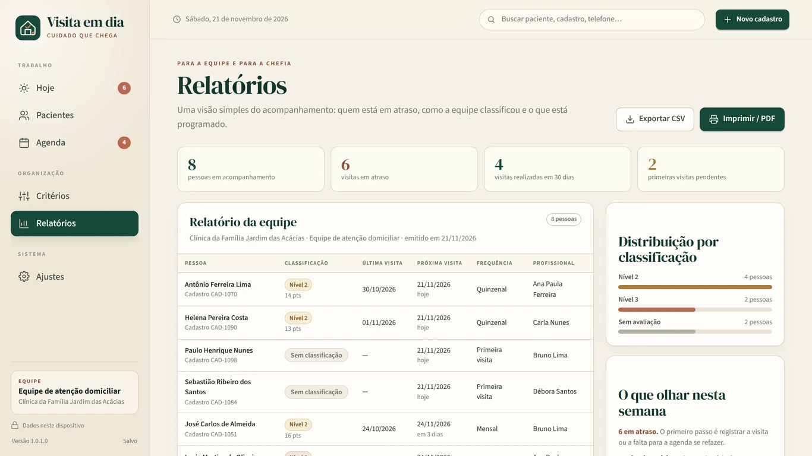
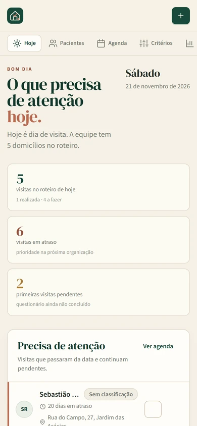
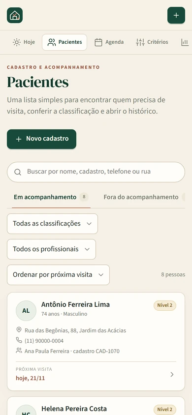
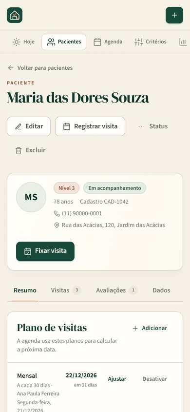

As visitas certas,
na frequência certa.
O Visita em dia reúne cadastro, avaliação de cuidado, classificação justificada e agenda em um só aplicativo. A equipe enxerga quem precisa de atenção e organiza o roteiro dentro da capacidade real do serviço.
Windows 10/11 e Android 7.0+. Funciona offline, sem conta obrigatória. Pacotes atuais: Windows 1.0.1.0 · Android 1.0.0.

O que é
Uma agenda que nasce da avaliação — e cabe na rotina da equipe
O Visita em dia foi feito para equipes que precisam decidir quem visitar, com que frequência e por quê, sem perder o fio entre o cadastro, a avaliação e a agenda. O aplicativo organiza o trabalho e deixa a justificativa registrada, mas não escolhe sozinho o cuidado de ninguém.
Cadastro e histórico
Identificação, contato, endereço, equipe, cuidador, condições de saúde e dispositivos. Busca por nome, cadastro, CNS, CPF, telefone ou rua, com arquivamento e histórico de visitas.
Avaliação e classificação
Questionário configurável, pontuação por critério, regras de gatilho, nível sugerido e justificativa editável. Cada ficha guarda a versão do instrumento que foi usada.
Agenda e capacidade
Planos por profissional, dias de visita, capacidade diária, datas bloqueadas, roteiro do dia e registro de visitas realizadas, faltas e remanejamentos.
Para quem serve: equipes de atenção domiciliar da atenção primária e de serviços de home care, incluindo ACS, enfermagem, medicina, fisioterapia, nutrição, serviço social e coordenação. Também ajuda quem precisa justificar a frequência das visitas e manter o acompanhamento organizado.
Por dentro
Do painel de hoje à ficha que a equipe leva para a visita
As imagens são da versão Windows, com dados fictícios. A versão Android usa a mesma lógica e se adapta à tela do celular.





No celular
A mesma base e o mesmo fluxo, em uma tela de 390 px.



Como o cálculo funciona
A pontuação é uma soma — e a decisão continua sendo da equipe
O instrumento padrão é a Complexidade em atenção domiciliar (Savassi LCM et al., 2012; Caderno de Atenção Domiciliar, Ministério da Saúde, 2013). Ele reúne nove critérios de capacidade e saúde. Cada critério vale de 0 a 3 pontos.
| Total | Classificação | Leitura |
|---|---|---|
| 0–3 | Sem indicação de AD | Capacidade preservada ou baixo risco. Acompanhamento habitual da atenção primária. |
| 4–6 | Nível 1 | Alguma dependência ou risco. O plano principal usa frequência mensal por padrão. |
| 7–18 | Nível 2 | Dependência e risco intermediários. O plano principal usa frequência mensal por padrão. |
| 19–27 | Nível 3 | Maior complexidade. O plano principal usa frequência mensal e prioridade mais alta. |
Respostas em branco contam 0 e marcam a ficha como parcial. Respostas de gatilho podem elevar a classificação, independentemente da soma. A frequência de cada profissional é configurável, e o instrumento e as faixas podem ser ajustados pela equipe.
Apoio à decisão, não prescrição
O resultado é uma sugestão para organizar a conversa e o registro da equipe. Ele não é diagnóstico, não define conduta terapêutica e não substitui a avaliação de um profissional habilitado. A decisão final e a justificativa são sempre da equipe responsável.
O que não é
Limites claros para um apoio operacional
O Visita em dia ajuda a organizar o cuidado, mas não ocupa o lugar dos sistemas oficiais nem do julgamento clínico.
Não é prontuário eletrônico
O registro oficial do paciente continua no sistema da unidade. O aplicativo é um apoio de organização e não deve ser usado como prontuário único.
Não é sistema oficial
Não substitui e-SUS, SISAB, prontuário municipal, faturamento ou qualquer sistema do SUS. As informações precisam ser conciliadas com os registros institucionais.
Não é dispositivo médico
Não faz diagnóstico, não prescreve, não monitora sinais em tempo real e não emite alarmes clínicos. Não use para decisões de emergência.
Não substitui o profissional
A classificação e a frequência são sugestões do instrumento configurado pela equipe. A avaliação, a conduta e a justificativa são responsabilidade do profissional habilitado.
Não é serviço de emergência
Em situação de urgência ou risco imediato, acione o SAMU (192) ou o serviço de emergência da sua região. O aplicativo não recebe chamados.
Não é sincronização automática
Cada dispositivo tem sua própria base local. Não há conta central, edição simultânea ou sincronização em tempo real; a transferência é feita por backup e restauração.
Leia o aviso legal completo para os limites de uso e de responsabilidade.
Compatibilidade e limites
O que a versão atual faz — e do que ela depende
Requisitos
- Windows: Windows 10 versão 1809 ou superior, 64 bits, com WebView2 Runtime. A janela do aplicativo tem tamanho mínimo de 900 × 620 px.
- Android: Android 7.0 (API 24) ou superior. O layout se adapta de celulares a tablets.
- Armazenamento: a base fica no armazenamento privado do aplicativo; o espaço necessário depende do volume de cadastros, visitas e avaliações.
- Conta: nenhuma conta é obrigatória. A conexão com o Google é opcional e serve apenas ao backup.
Limitações
- Funciona offline, sem servidor do desenvolvedor e sem sincronização automática entre dispositivos.
- O backup é manual e cifrado por uma senha escolhida pelo usuário; pode ser salvo como arquivo ou na pasta privada do Google Drive.
- Backup no Drive, exportação de arquivos e impressão em PDF dependem do aplicativo instalado e dos recursos do sistema; esta página é apenas informativa e não se conecta à base.
- Desinstalar o aplicativo remove a base local. Mantenha um backup atualizado e guarde a senha em local seguro.
- A publicação e a atualização nas lojas dependem da análise de cada plataforma e podem levar alguns dias.
Pacotes descritos nesta página: Windows 1.0.1.0 · Android 1.0.0. A disponibilidade no Microsoft Store e no Google Play depende do canal oficial.
Privacidade
Os dados ficam com a unidade que usa o aplicativo
O desenvolvedor não recebe, não acessa e não armazena os dados inseridos no aplicativo. A base pertence à unidade de saúde que usa o programa. Os dados ficam no armazenamento privado do aplicativo, protegidos por criptografia em repouso.
O backup é criado apenas por ação do usuário, com uma senha própria. Ele pode ser guardado como arquivo ou na pasta de dados privada do aplicativo no Google Drive da própria conta. O acesso ao Google é opcional: o aplicativo não lê nem altera os outros arquivos do Drive.
Não há anúncios, rastreamento, telemetria, venda de dados ou envio automático para servidores do desenvolvedor. O usuário pode desconectar a conta e revogar o acesso a qualquer momento em myaccount.google.com/permissions.
Uso limitado das APIs do Google
O uso das informações recebidas das APIs do Google pelo Visita em dia está em conformidade com a Política de Dados do Usuário dos Serviços de API do Google, incluindo os requisitos de Uso Limitado.
Os dados do Google não são usados para publicidade, perfilamento, concessão de crédito nem são vendidos ou compartilhados com terceiros.
O escopo solicitado é https://www.googleapis.com/auth/drive.appdata, restrito à pasta privada do aplicativo.
Documentos
Transparência e condições de uso
Perguntas frequentes
Dúvidas comuns antes de começar
Preciso de internet para usar o aplicativo?
Não. O cadastro, a avaliação, a agenda e os relatórios funcionam offline. A internet só é necessária para conectar a conta Google e enviar ou restaurar um backup no Drive. O download inicial e as atualizações vêm da loja.
Onde ficam os dados dos pacientes?
No armazenamento privado do aplicativo, no dispositivo, com criptografia em repouso. Não há envio automático para o desenvolvedor. O backup é opcional, criado pelo usuário e protegido por uma senha própria.
O aplicativo substitui o prontuário ou o e-SUS?
Não. Ele é um apoio operacional para organizar avaliações, classificação e agenda. O registro oficial e o prontuário continuam sendo os sistemas da unidade de saúde. Veja também o aviso legal.
Como a classificação é calculada?
São nove critérios de capacidade e saúde, cada um valendo de 0 a 3 pontos. O total vai de 0 a 27 e cai em uma das faixas: sem indicação de atenção domiciliar (0–3), Nível 1 (4–6), Nível 2 (7–18) ou Nível 3 (19–27). Respostas de gatilho podem elevar a classificação. O resultado é uma sugestão; a decisão é da equipe. Ver o cálculo em detalhe.
Posso usar a mesma base em mais de um dispositivo?
Não há sincronização em tempo real. Cada instalação tem sua própria base local. Para levar os dados a outro dispositivo, exporte um backup e restaure no aparelho de destino. Evite editar a mesma base em dois lugares ao mesmo tempo.
Como faço backup e o que acontece se eu perder a senha?
Em Ajustes, escolha a opção de backup, defina uma senha e salve o arquivo no dispositivo ou na pasta privada do Google Drive. O arquivo é cifrado: sem a senha, não é possível restaurá-lo. Guarde a senha em local seguro e separado do arquivo.
O que acontece ao desinstalar o aplicativo?
A base local é removida do dispositivo. Um backup salvo em arquivo ou no Google Drive continua existindo e pode ser restaurado depois de reinstalar o aplicativo. Por isso, mantenha backups regulares.
Quais versões estão disponíveis?
Os pacotes atuais são Windows 1.0.1.0 e Android 1.0.0. A versão Android está em preparação para o Google Play. A disponibilidade e a atualização nas lojas dependem da análise de cada plataforma.
English summary
Visita em dia is an offline-first Windows and Android app for home-care teams. It brings together patient registration, a configurable care assessment, a justified classification, and visit scheduling based on the team's real capacity. Patient data is stored locally and encrypted; there is no developer server, advertising, or telemetry. An optional backup can be saved as an encrypted file or to the user's own Google Drive app-data folder. The app is not an electronic medical record and does not replace official health systems or clinical judgement.